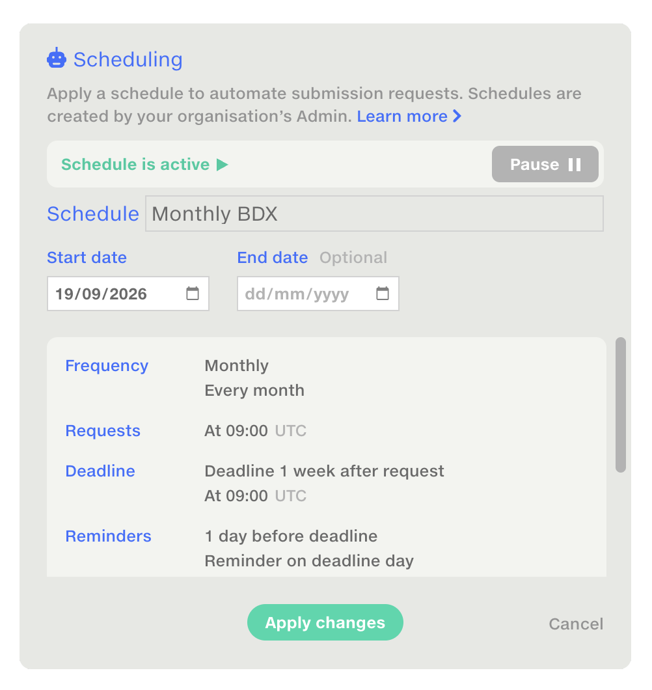

Connecting organisations through data
Infrastructure to automate data exchange, laying the foundation for a connected network.
Product strategySystems thinkingProcess design
Key points
- Reframed an upload portal as a cross-company network
- Automated a manual workflow, with setup in under a minute
- Adapted to diverse files, formats and organisations
- Unified submissions, scheduling and organisation admin

Summary
I led the design of Feeds, Quantemplate’s workspace for secure data exchange between organisations.
By mapping the end-to-end workflow, I expanded an upload-portal concept into a system for submissions, with automation, permissions and oversight.
The solution supported the nuances of insurance workflows and laid the foundation for a broader connected-data strategy.
 Learn how to automate data exchange with Quantemplate Feeds
A quick guide to Feeds concepts and an overview of the interface.
Watch on YouTube
Learn how to automate data exchange with Quantemplate Feeds
A quick guide to Feeds concepts and an overview of the interface.
Watch on YouTube
Problem
We’d automated the data processing, but not the process
Insurance companies depend on regular submissions from brokers, managing general agents, third-party administrators and other partners. Our data transformation pipelines did a good job of mapping and harmonising this data, but the parts outside Quantemplate were process bottlenecks.
Email was manual and difficult to audit, while FTP and API integrations were unwieldy. Moreover, keeping track of what was in or overdue every month was a significant timesink.
Even on the happy path, we identified five manual steps to request data and another five to bring it into and out of Quantemplate.
Across an average of 150 trading partners, repeated monthly, that amounted to 18,000 manual steps a year.


Approach
Modelling the whole workflow
I mapped every touchpoint from the initial request through submission, processing, validation, correction and onward distribution. For each stage we considered the unhappy paths and dead ends: late or incomplete submissions, incorrect files, resubmissions and validation failures.
The map identified every manual step that could be automated, every notification that needed to be sent and every point where human judgement was still required.
It became the basis for the submission lifecycle, schedules, statuses, reminders, version history and pipeline triggers.

Key decisions
From Data Drop to Data Network
My initial concept, Data Drop, was a lightweight portal with an unauthenticated, one-time upload link. It would have been a quick win, but mapping its workflow revealed that it would move the email problem further down the chain: links buried in inboxes, no persistent activity record and resubmissions still needing coordination.
The Data Drop would have been a quick win but an incomplete solution. I proposed Feeds instead.

Feeds would be a whole new area in the product with authenticated users, separate organisations and persistent relationships between partners. This was a larger product increment, but one that addressed the whole workflow, making persistent connections between organisations and opening a path to a broader network strategy.
Selling the wider scope
I used the journey maps to make the case for the broader scope, showing how onboarding, scheduling and administration were necessary parts of a complete submission workflow. Connecting each capability to a concrete user need helped explain why improving the upload experience alone wouldn’t solve the whole problem.


Dropping the portal layer
I initially favoured retaining a separate, stripped-back portal. My product partner challenged that assumption, and working through the journey together changed my view. If we could preserve the simplicity of the upload process within feeds, whilst introducing users to key Quantemplate behaviours, that would make for a more coherent user experience, and a more efficient and maintainable build.
Flexibility for complex submissions
When we spoke with users and looked at their existing Quantemplate workflows, we could see that a submission was rarely uniform: Premium and Claims might arrive as separate tabs, files, or from different organisations, each needing different pipeline logic.
I introduced subsections to represent these distinct streams within one submission. Feed owners define subsections, and submitters assign uploads to the appropriate one. Using the wayfinding principle of progressive disclosure, the interface walks them through the process, step-by-step.
Using wayfinding principles, I navigated users through the process of assigning their data to the right subsection.
 Feeds 5: Submitting and receiving data
Uploading data to a Feed to send to a partner organisation, using subsections to separate Premium and Claims data.
Watch on YouTube
Feeds 5: Submitting and receiving data
Uploading data to a Feed to send to a partner organisation, using subsections to separate Premium and Claims data.
Watch on YouTube
Roles for humans and robots alike
I modelled permission levels around the way our clients divided responsibility. Owners and managers needed to configure Feeds, connect with partners and oversee the process. Submitters only needed access when it was time to upload data, while read-only users needed visibility to use Feeds data in pipelines.
I introduced the concept of a ‘Robot User’ to surface automation capabilities across the platform and make them auditable.
Looking at our permissions model, I realised that we needed a way to run automations without a user present, and have those runs tracked in the history. When the Robot User has access to a Feed, they can take the data from it, run a pipeline they have access to and output it to a dataset they’ve been given write permission on.

Enabling automation surfaces a clear ‘Share with Robot User’ button, with prompts to share any dependent documents too. If users lack sharing rights, they can ask the document owner to grant access. This makes the permissions model visible at the point it matters, reduces setup friction and anticipates the next action users need to take.

Implementation
Trusted setup in under a minute
Initiating a partner connection required just their contact’s email. We used the domain to find their organisation or begin creating it. I researched and proposed a logo.dev integration to populate organisation names and logos automatically, reducing setup effort and making requests more recognisable. Admins on each side approve the connection, with all events tracked in a new admin panel.
What if the organisation was already on Quantemplate? What if they were already a partner? Working through every scenario meant some complexity behind the scenes, but ensured simplicity in the user experience.

Admins can also create reusable schedules to centrally manage request frequency. Research revealed that feeds often shared a cadence but followed different contract dates. I made start and end dates properties of a Feed, rather than a schedule, allowing requests to stop at contract end without affecting other feeds using the same schedule.

All that’s required to set up a new Feed is to add subsections, search for a partner and connect an existing schedule. In under one minute you can be requesting data from your trading partners.
 Feeds 2: Set up a feed
How to set up a Feed, add subsections and connect a schedule.
Watch on YouTube
Feeds 2: Set up a feed
How to set up a Feed, add subsections and connect a schedule.
Watch on YouTube
The full picture, at a glance
Both parties retain an immutable, versioned record of submitted data. User avatars and organisation domains identify the people and companies behind submissions, building trust.

I redesigned the Feed repository as a management dashboard, showing which Feeds are complete, waiting for data or overdue; this real-time view of inventory replaces manual tracking in spreadsheets. Configurable reminders chase outstanding submissions automatically.
Visible connections between Feeds and pipelines help managers understand what each submission will trigger and what the automation is still waiting for.

We gave the same dashboard treatment to Pipelines storage too. This was based on specific feedback from users of our automation harness that it was hard to keep track of what was automated and what the status was. They didn’t want to open every document to find out. Adding the automation capability was only half the job: it needed to be understandable and transparent to users.

Connecting the whole data chain
Feeds support incoming data, outgoing distribution and onward sharing. An insurer can distribute data to reinsurers, while a broker can receive and pass on the original submission. Each organisation can connect its own processing pipelines while retaining a shared, auditable source record. This uniquely allows us to surface the full data Chain of Custody.
 Data Chain of Custody
How insurers, MGAs, TPAs, brokers and reinsurers exchange bordereaux data through Quantemplate’s network, with a transparent, permanent view of where data came from, how it was processed and who it was shared with.
Watch on YouTube
Data Chain of Custody
How insurers, MGAs, TPAs, brokers and reinsurers exchange bordereaux data through Quantemplate’s network, with a transparent, permanent view of where data came from, how it was processed and who it was shared with.
Watch on YouTube
The Feeds lay the architectural groundwork for the big vision: automated data flows across the industry.
We mapped out further Use Cases on this support page.

Outcome
A foundation for networked data
Feeds have been running production data for approximately 18 months, processing recurring monthly submissions and 3.4 million rows to date. This removes nearly all of the manual steps identified in the original workflow mapping, for true ‘straight-through processing’. The one step that remains, the initial upload, is performed directly by the data supplier.
Bringing further partners onto Feeds is an ongoing project: in-app guidance and comprehensive tutorials have driven initial uptake, and upcoming features to share validation reports and suggest corrections should make the value of switching more visible.
Feeds expanded Quantemplate from a product for automating processes within an organisation, towards infrastructure connecting them.
This opens the door to Network Intelligence, where data mappings, transformations and corrections are crowdsourced.